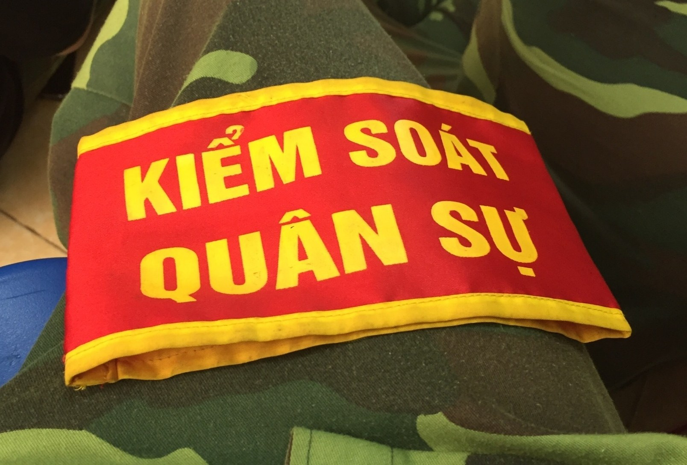

PHONG CÁCH 13 // Y2K CYBER (CAM & COBALT)
AN NINH NHÂN DÂN: BẢO VỆ BÌNH YÊN
Lực lượng Công an nhân dân và An ninh nhân dân là thanh bảo kiếm sắc bén bảo vệ Đảng, Nhà nước và cuộc sống bình yên, hạnh phúc của toàn thể nhân dân.
✦ PHỐI HỢP QUÂN DÂN AN NINH VỮNG CHẮC:
"Vì nước quên thân, vì dân phục vụ" — Phối hợp hiệp đồng chặt chẽ giữa QĐND và CAND trong giữ gìn trật tự an toàn xã hội và an ninh quốc gia.

✦ LỰC LƯỢNG AN NINH NHÂN DÂN — BẢO VỆ CHỦ QUYỀN AN NINH QUỐC GIA